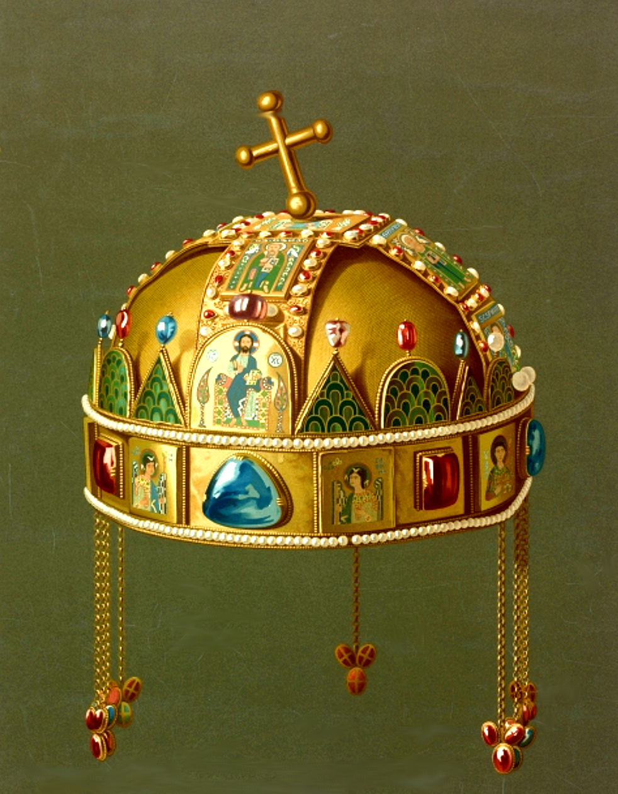

Az építkezés története
Az Országház építésének feltétele volt, hogy kiz
árólag hazai építőanyagokat használjanak fel. Kivétel a főlé
pcső mellett található nyolc, egyenként hat méter magas márványmo
nolit, amelyet Svédországból hozattak (összesen 12 ilyen oszlop készült
, a másik négy a londoni Parlamentben található). Az építkezés 1885-től 19
04-ig tartott, azaz a tervező az épület teljes befejezését már nem érhette meg.
Az első kapavágás 1885. október 12-én történt a Tömő-tér talaján, az építkezés
során tizenhét éven keresztül átlagosan ezer ember dolgozott, 176 000 köbméternyi
földet mozgattak meg; 40 millió téglát, félmillió díszkövet, 40 kg aranyat használtak fel.
Bár az épület felavatása már 1894-ben megtörtént, ekkor még nem volt készen,
sőt még 1902-ben sem, amikorra már a parlament mindkét háza ideköltözött. Az
építkezés 1904-ig tartott.
Maga az épület 268 m hosszú, 123 m széles és 96 m magas,
alapterülete 17 745 négyzetméter, térfogata 473 000 köbméter.
Központi eleme a kupola, amelynek két oldalán emelkedik a képviselőház
(ma az Országgyűlés) és a volt főrendiház (ma Kongresszusi terem) ülésterme.
Az épületnek 27 kapuja van, belül 29 lépcsőház és 13 személy- és teherlift
szolgálja a közlekedést és a szállítást. Az épületben valamivel több mint 200 irodahelyiség található.
A 2014-ben megnyitott látogatóközpont
A Duna felőli oldal a főhomlokzat, de a hivatalos főbejárat
a Kossuth Lajos térről nyílik. Kívül 90, belül 152, összesen
242 szobor van a falakon, jeles alkotók freskói, festményei
is ékesítik az Országházat. A díszítéseknél felhasznált 22-23 karátos arany összmennyisége hozzávetőleg 40 kilogramm.
Európa egyik első távfűtött épülete: A Balassi Bálint utca 1–5.
számon álló – szintén Steindl Imre által tervezett és a közelmúltban
felújított – Tisza Lajos Irodaház udvarán 1899-ben helyezték üzembe
az azóta több korszerűsítésen is átesett kazánházat. A szellőzést és
a klímatizálást pedig a Kossuth téri két légbeszívó aknából, alagutak rendszerén keresztül bevezetve oldják meg.
A Szent Korona
A 2000. évi I. törvény rendelkezése alapján 2001 óta az Országházban van kiállítva a Szent Korona és a többi koronázási jelvény (a koronázási palást kivételével). A korona 1978 óta a Magyar Nemzeti Múzeumban volt megtekinthető; a törvény szövege szerint az ünnepélyes áthelyezéssel „Magyarország méltó helyére emeli a Szent Koronát, és a nemzet múzeumából a nemzetet képviselő Országgyűlés oltalma alá helyezi”.
Pályázat a megépítésére
Az épület felépítéséről az Országgyűlés törvényt alkotott: az 1880. évi LVIII. tv. alapján tervpályázatot hirdettek 1881-ben. Magyarország számára egy állandó országház építésére több kiváló építész jelentkezett. 1883. február 1-jén a pályázat határideje lejárt, ekkorra tizenkilenc terv érkezett be. A bírálat alapján a kitűzött négy egyenlő díjat az „Alkotmány I.”, a „Patres conscripti”, az „Alkotmány II.” és a „Scti. Stephani regis” jeligéjű terveknek ítélték oda. Steindl Imre „Alkotmány I.” neogótikus hatású épületterve Hauszmann Alajos „Patres conscripti” neobarokkot és neoklasszicizmust sugárzó terve Schickedanz Albert és Freund Vilmos „Alkotmány II.” együttes alkotása, mely elsősorban az antik építészeten alapult Otto Wagner és társai „Scti. Stephani regis” neoreneszánsz pályaműve Érdekesség, hogy Hauszmann terve volt az egyetlen, ami a Dunára merőlegesen képzelte el az épületet, dacára, hogy a pályázat szerint a főhomlokzatnak a Dunára kellett néznie. Gerster Károly egyedüli neobizánci terve pedig egy igazi keleti palotát idézett, amit impozáns jellege miatt külön is méltattak, igaz, erről bebizonyosodott, hogy nem elégséges a tervezett belső tere. (A helyigény miatt utóbb Steindl is korrekciókra kényszerült.)
Delegációs terem

Lukács József, az Országház főépítésze a bemutató sajtóeseményen hangsúlyozta: a Parlament elkészültekor,
1904-ben a főlépcső felett található Delegációs terem a monarchia közös minisztériumainak ellenőrzésére
kiküldött delegátusok helyszíne volt, itt hallgatták meg a közös ügyek minisztereit. A terem berendezése,
az Országház üléstermeihez hasonlított,
padsorokkal, illetve elnöki és szónoki emelvénnyel, így a felújítás egyik célja, ennek az újraalkotása volt - tette hozzá.